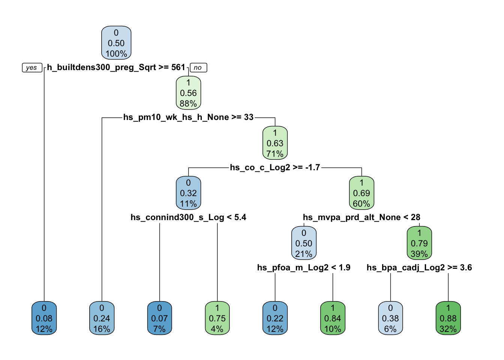
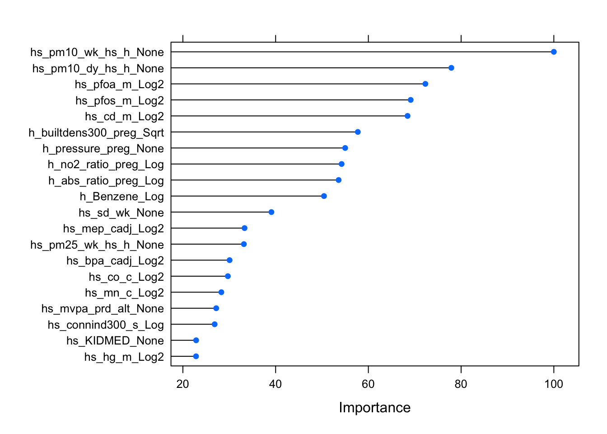
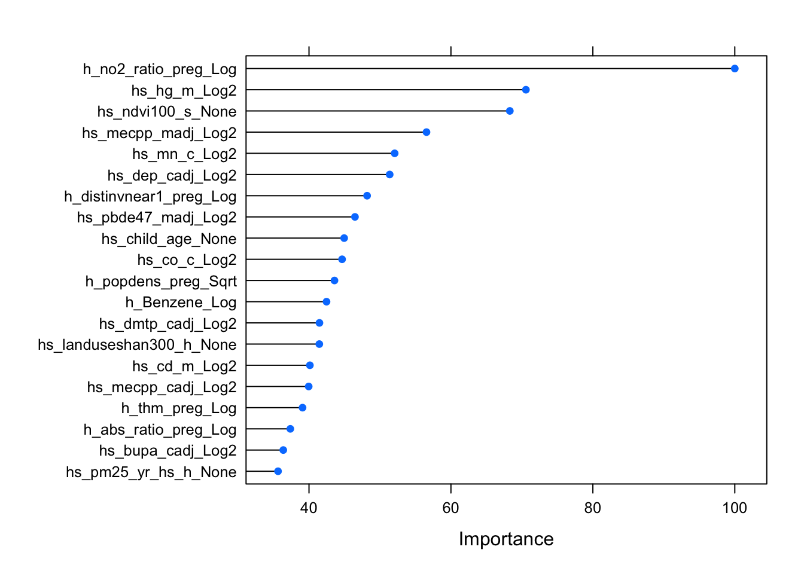
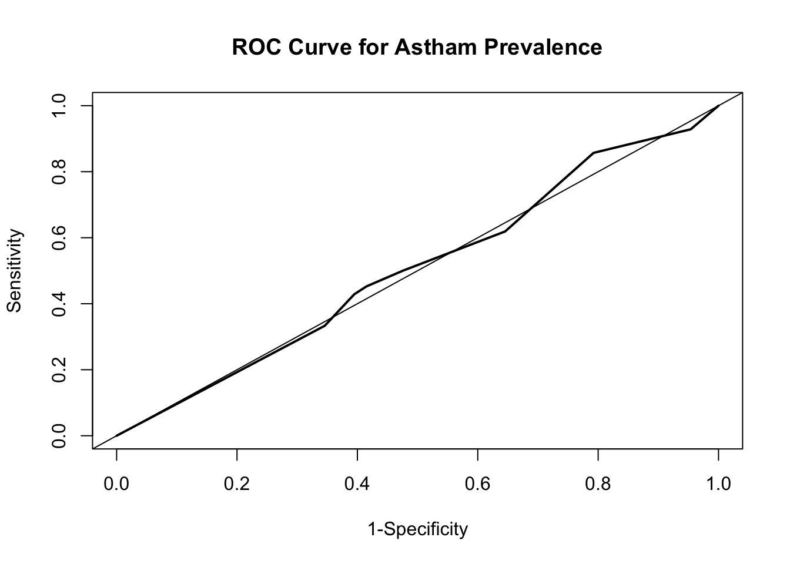

Final Project Description
Option and Dataset
For my final project, I have chosen Option #2: Explore a provided dataset for pre-specified research goals.
The dataset I will be using is The Exposome and Health Datasets (used for class assignments).
Research Question
Research Question: What features are important to reducing asthma prevalence?
Importance to Public Health: By understanding what features are more important to reducing asthma prevalence, policies can be developed to target these features.
Analysis Plan
To explore the research question, I will be comparing the performance of two machine learning algorithms:
- Classification Trees
- Random Forest
Preparing Exposome Dataset
The expo_final dataset was loaded and merged to include
features in the exposome and phenotype. This
will allow me to explore all features that may be associated with asthma
prevalence. The variable asthma (hs_asthma) represents
individuals who responded to either having the outcome or not having the
outcome at 6-11 years old. hs_asthma was changed to a
factor variable and re-leveled to have “0” (No) as the reference group,
which is necessary in the analysis portion.
load("./exposome.RData")
expo_final <- merge(exposome,phenotype,by="ID") %>%
merge(covariates, by="ID")
# ID variable was stripped
expo_final$ID <- NULL
# Removed any rows with missing data
expo_final<-na.omit(expo_final)
# The outcome variable, asthma (hs_asthma), was changed to a factor variable and re-leveled to have "0" as the reference group
expo_final$hs_asthma<-as.factor(expo_final$hs_asthma)
expo_final$hs_asthma<-relevel(expo_final$hs_asthma, ref="0")
Partitioning Data into Training and Testing Sets
The expo_final data was partitioned 70/30, with 70% in
the training set and 30% in the testing set.
set.seed(123)
train.indices<-createDataPartition(y=expo_final$hs_asthma,p=0.7,list=FALSE)
train.data<-expo_final[train.indices, ]
test.data<-expo_final[-train.indices, ]
Classification Trees
A Classification Tree was used in this project to classify features
based on whether they are high or low for asthma prevalence using all
the features associated with exposures that may be associated with
asthma prevalence. The outcome was binary, which eliminated the use of
Regression Trees. The goal of using this algorithm was the examine and
divide each feature included in the expo_final dataset. The
complexity parameter (cp) was used to prune the trees and avoid
overfitting. Tuning the cp allowed me to try to get the best prediction
possible. The result of Classification Trees will be homogenous
subgroups for asthma prevalence, which could be used to understand which
features are most associated with asthma prevalence.
A 10-fold cross-validation method and down-sampling was used. I also tested a sequence of cp parameters and got the best tune of 0.011.
The accuracy of Classification Trees was 54.5%.
set.seed(123)
# Created 10-fold cross-validation and using down-sampling
expo.control.class <- trainControl(method="cv", number=10, sampling="down")
# Created sequence of cp parameters to try
grid.2 <- expand.grid(cp=seq(0.001,0.1, by=0.001))
# Train model
expo_final_class <- train(hs_asthma ~., data = train.data, method = "rpart", trControl = expo.control.class, tuneGrid = grid.2)
# Best Tune
expo_final_class$bestTune## cp
## 11 0.011# Confusion Matrix
confusionMatrix(expo_final_class)## Cross-Validated (10 fold) Confusion Matrix
##
## (entries are percentual average cell counts across resamples)
##
## Reference
## Prediction 0 1
## 0 47.8 4.3
## 1 41.2 6.7
##
## Accuracy (average) : 0.545
Classification Tree: Variable of Importance
Variable Importance is defined as “An overall measure of variable importance is the sum of the goodness of split measures for each split for which it was the primary variable.”
The Classification Tree algorithm listed
hs_pm10_wk_hs_h_None as the most important variable in
understanding asthma prevalence. This variable is an outdoor exposure
(air pollution), belongs in the PM10 subfamily, and represents the pm10
value (extrapolated back in time using ratio method) one week before hs
test at home. This value is collected in the postnatal period.
# Obtained variable importance on the final model within training data
varImp(expo_final_class)## rpart variable importance
##
## only 20 most important variables shown (out of 297)
##
## Overall
## hs_pm10_wk_hs_h_None 100.00
## hs_pm10_dy_hs_h_None 77.89
## hs_pfoa_m_Log2 72.30
## hs_pfos_m_Log2 69.13
## hs_cd_m_Log2 68.45
## h_builtdens300_preg_Sqrt 57.73
## h_pressure_preg_None 55.00
## h_no2_ratio_preg_Log 54.23
## h_abs_ratio_preg_Log 53.59
## h_Benzene_Log 50.43
## hs_sd_wk_None 39.09
## hs_mep_cadj_Log2 33.30
## hs_pm25_wk_hs_h_None 33.16
## hs_bpa_cadj_Log2 30.07
## hs_co_c_Log2 29.70
## hs_mn_c_Log2 28.30
## hs_mvpa_prd_alt_None 27.19
## hs_connind300_s_Log 26.85
## hs_KIDMED_None 22.86
## hs_hg_m_Log2 22.83
Classification Tree: Visualization
Final Model where best cp tuning/parameter is used.
rpart.plot(expo_final_class$finalModel)
Plot of Variable of Importance
Note: The plot is restricted to the top 20 variables, representing at least 30% of importance.
plot(varImp(expo_final_class), top = 20)
Random Forest
Using a random forest, randomly sampling was done with the features
in the expo_final dataset created for this project. This
method used moderately strong features to come up in the tree and make
predictions. Random forests, compared to classification trees, provide
an opportunity for all the features to contribute to predicting asthma
prevalence. However, it is possible the strongest features may have been
left out when creating the trees, which may have contributed to the
lower accuracy.
Unlike Classification Trees, Random Forest does not utilize pruning. The result of random forest will provide variable of importance, which will be interpreted to understand which features are most associated with asthma prevalence.
A 10-fold cross-validation method and down-sampling was used. I also tested three different values of mtry and got the best tune of 120.
The accuracy of Random Forest was 54.3%
set.seed(123)
# Created 10-fold validation with down-sampling
control.settings <- trainControl(method="cv", number=10, sampling="down")
# Tested three different values of mtry
mtry.vals <- c(ncol(train.data)-1, sqrt(ncol(train.data)-1), 0.5*ncol(train.data)-1)
mtry.grid <- expand.grid(.mtry=round(mtry.vals))
# Train model
expo_final_rf <- train(hs_asthma ~., data = train.data, method = "rf", metric = "Accuracy", tuneGrid = mtry.grid, trControl = control.settings, ntree=100)
# Best Tune
expo_final_rf$bestTune## mtry
## 2 120# Confusion Matrix
confusionMatrix(expo_final_rf)## Cross-Validated (10 fold) Confusion Matrix
##
## (entries are percentual average cell counts across resamples)
##
## Reference
## Prediction 0 1
## 0 47.9 4.6
## 1 41.1 6.4
##
## Accuracy (average) : 0.5428
Random Forest: Variable of Importance
Variable Importance is defined as “An overall measure of variable importance is the sum of the goodness of split measures for each split for which it was the primary variable.”
The Random Forest algorithm listed h_no2_ratio_preg_Log
as the most important variable in understanding asthma prevalence. This
variable is an outdoor exposure (air pollution), belongs in the NO2
subfamily, and represents the NO2 value (extrapolated back in time using
ratio method) during pregnancy. This value is collected during
pregnancy.
varImp(expo_final_rf)## rf variable importance
##
## only 20 most important variables shown (out of 296)
##
## Overall
## h_no2_ratio_preg_Log 100.00
## hs_hg_m_Log2 70.57
## hs_ndvi100_s_None 68.30
## hs_mecpp_madj_Log2 56.56
## hs_mn_c_Log2 52.07
## hs_dep_cadj_Log2 51.37
## h_distinvnear1_preg_Log 48.19
## hs_pbde47_madj_Log2 46.48
## hs_child_age_None 44.95
## hs_co_c_Log2 44.66
## h_popdens_preg_Sqrt 43.59
## h_Benzene_Log 42.47
## hs_dmtp_cadj_Log2 41.47
## hs_landuseshan300_h_None 41.45
## hs_cd_m_Log2 40.12
## hs_mecpp_cadj_Log2 39.96
## h_thm_preg_Log 39.09
## h_abs_ratio_preg_Log 37.37
## hs_bupa_cadj_Log2 36.38
## hs_pm25_yr_hs_h_None 35.64
Random Forest: Visualization
Plot of Variable of Importance
Note: The plot is restricted to the top 20 variables, representing at least 30% of importance.
plot(varImp(expo_final_rf), top=20)
Prediction
To perform prediction on the testing set, I used the Classification Tree model. This model provided the higher accuracy (54.5%), although it is not the ideal model to understand the features that are associated with asthma prevalence.
The prediction model had an accuracy of 57.07%.
set.seed(123)
expo_final_pred <- predict(expo_final_class, newdata = test.data)
confusionMatrix(expo_final_pred, test.data$hs_asthma, positive = "1")## Confusion Matrix and Statistics
##
## Reference
## Prediction 0 1
## 0 203 23
## 1 144 19
##
## Accuracy : 0.5707
## 95% CI : (0.5198, 0.6205)
## No Information Rate : 0.892
## P-Value [Acc > NIR] : 1
##
## Kappa : 0.0165
##
## Mcnemar's Test P-Value : <2e-16
##
## Sensitivity : 0.45238
## Specificity : 0.58501
## Pos Pred Value : 0.11656
## Neg Pred Value : 0.89823
## Prevalence : 0.10797
## Detection Rate : 0.04884
## Detection Prevalence : 0.41902
## Balanced Accuracy : 0.51870
##
## 'Positive' Class : 1
## Prediction: Visualization
I created predictions as probabilities on the test set. The
pre_expo_prob dataframe contains the probability of being a
feature associated with asthma probability vs. being a feature not
associated with asthma probability.
set.seed(123)
pred_expo_prob<-predict(expo_final_class, test.data, type="prob")
analysis <- roc(response = test.data$hs_asthma, predictor = pred_expo_prob[,2])## Setting levels: control = 0, case = 1## Setting direction: controls < casesplot(1-analysis$specificities,analysis$sensitivities,type="l",
ylab="Sensitivity",xlab="1-Specificity",col="black",lwd=2,
main = "ROC Curve for Astham Prevalence")
abline(a=0,b=1)
Conclusion
Using merged dataset expo_final used, the Classification
Trees algorithm had a slightly higher accuracy and was used for final
predictions. The accuracy using the testing set was 57.07%. The
Classification Tree found the variable of importance with the highest
importance to prediction was hs_pm10_wk_hs_h_None, the pm10 levels
recorded post-natally.
A key limitation to this analysis is the accuracy produced from this algorithm is still relatively low. Only two machine learning algorithms were compared to understand what features are most important to asthma prevalence. Other algorithms may be used to achieve higher accuracy and gain a better understanding on what features are most associated with asthma prevalence.
Thank You!
Thank you for a wonderful semester!